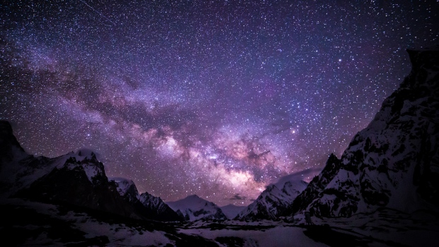

Los astronautas
Con la llegada de los viajes comerciales al espacio hay que aclarar que un astronauta —término derivado del griego astron (ἄστρον, 'estrella') y nautes (ναύτης, 'navegante')— necesita un par de características para ser considerado como tal, por ejemplo: Entrenamiento de astronauta, tener una misión de alguna agencia espacial, entre otras características más secundarias. Ser astronauta es una certificación que dan las Agencias Espaciales. Si faltan estas características, lo más seguro es que la persona sea considerada como Turista Espacial.
El término astronauta es muy conocido y usado en el mundo, principalmente utilizado por NASA en Estados Unidos, sin embargo existen otros nombres que utilizan otras naciones, los astronautas enviados por Rusia o la Unión Soviética se conocen típicamente como «cosmonautas» —del ruso kosmonavt (космонавт), que a su vez deriva de las palabras griegas kosmos (κοσμος, 'universo') y nautes (ναύτης, 'navegante')— para distinguirlos de los estadounidenses. Desarrollos comparativamente recientes en vuelos espaciales tripulados realizados por China han llevado al surgimiento del término «taikonauta» —del mandarín tàikōngrén (太空人, 'hombre del espacio')— aunque su uso es algo informal y su origen no está claro.
La primera persona en salir al espacio en toda la Historia fue el cosmonauta Yuri Gagarin al ser lanzado el 12 de abril de 1961 a bordo de la nave Vostok 1. La primera mujer en volar al espacio fue Valentina Tereshkova, la cual salió al espacio el 16 de junio de 1963 a bordo de la Vostok 6. German Titov, cosmonauta soviético, fue el segundo hombre en órbita terrestre después de Gagarin.
En el marco del programa Intercosmos, también fueron al espacio cosmonautas del Bloque del Este y otros países aliados de la Unión Soviética, como Cuba. También Francia y la India, que no eran estados socialistas, participaron de Intercosmos.
El primer grupo de astronautas estadounidenses se seleccionó en abril de 1959, para el programa Mercury de la NASA. Este grupo, que fue conocido como los «Mercury Seven» («los Siete del Mercury»), estaba compuesto por Scott Carpenter, Gordon Cooper, John Glenn, Gus Grissom, Wally Schirra, Alan Shepard y Deke Slayton. Todos eran pilotos de pruebas militares, un requisito que dictó el presidente Eisenhower para simplificar el proceso de selección.
Los siete miembros del primer grupo de astronautas fueron al espacio al final, aunque uno, Deke Slayton, no voló en una misión "Mercurio" por razones médicas. Finalmente, participaría en la misión Apolo-Soyuz. Cada uno de los otros seis viajaron al espacio en una misión Mercurio.

Durante el programa Apolo, (1961-1975), los Estados Unidos enviaron un total de 30 misiones tripuladas: seis en el programa Mercury, 10 en el programa Gemini, 11 en el programa Apolo, tres en el programa Skylab y uno en el programa de pruebas Apolo-Soyuz. Estas 30 misiones proporcionaron 71 oportunidades de vuelo individual: seis en el Mercury, 20 en el Gemini, 33 en el Apolo, nueve en el Skylab, y tres en el Apolo-Soyuz. Estos puestos fueron cubiertos por 43 personas.
